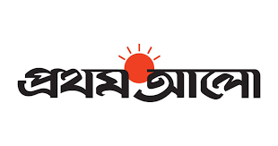

Pillars of "Bangladesh 2.0"

Innovation
"Bangladesh thrives through resilience, digital transformation, renewable energy, and innovation."

Sustainability
Sustainability in Bangladesh focuses on renewable energy, climate resilience, and development.
Infrastructure
The infrastructure of Bangladesh is developing with challenges in transportation, energy, and urbanization.

Empowerment
Empowerment of Bangladesh lies in education, innovation, equality, and sustainable growth.
The Vision of Future
Bangladesh 2.0 aims to redefine the nation’s trajectory by embracing cutting-edge technology, promoting inclusive growth, and ensuring sustainability. With initiatives in renewable energy, digital transformation, and robust infrastructure, the country is set to become a global model of development.
Digital Transformation
Creating a nationwide digital ecosystem to enhance connectivity and access to services for all citizens.
Green Energy
Investments in solar and wind energy to ensure a sustainable and eco-friendly future.
Modern Infrastructure
Building state-of-the-art infrastructure to support economic growth and global competitiveness.
"When we want to help the poor, we usually offer them charity. Most often we use charity to avoid recognizing the problem and finding the solution for it. Charity becomes a way to shrug off our responsibility. But charity is no solution to poverty. Charity only perpetuates poverty by taking the initiative away from the poor. Charity allows us to go ahead with our own lives without worrying about the lives of the poor. Charity appeases our consciences."
Dr. Muhammad Yunus
Chief Adviser of the People's Republic of Bangladesh
Recent News
Bangladesh 2.0 aims to redefine the nation's trajectory by embracing cutting-edge technology, promoting inclusive growth, and ensuring sustainability. With initiatives in renewable energy, digital transformation, and robust infrastructure, the country is set to become a global model of development.
চলচ্চিত্রশিল্পকে সমৃদ্ধ করতে সর্বাত্মক সহযোগিতা
Date: 05/01/2025 Time: 10.25 PM
বিশ্বদরবারে বাংলাদেশের সংগ্রামের ইতিহাস ও সংস্কৃতি তুলে ধরার আহ্বান জানিয়েছেন তথ্য ও সম্প্রচার উপদেষ্টা মো. নাহিদ ইসলাম। চলচ্চিত্রশিল্পকে সমৃদ্ধ করতে সরকার সর্বাত্মক সহযোগিতা করবে বলেও উল্লেখ করেছেন তিনি। রাজধানীর জাতীয় জাদুঘর মিলনায়তনে আজ শনিবার বিকেলে রেইনবো চলচ্চিত্র সংসদের উদ্যোগে আয়োজিত ঢাকা আন্তর্জাতিক চলচ্চিত্র উৎসবের উদ্বোধন অনুষ্ঠানে তথ্য উপদেষ্টা এ কথা বলেন। আজ তথ্য ও সম্প্রচার মন্ত্রণালয়ের বিজ্ঞপ্তিতে এ কথা জানানো হয়।
গতি কমছে নাহিদ রানার
Date: 05/01/2025 Time: 10.25 PM
এবারের বিপিএলে এখন পর্যন্ত ছয়টি করে ম্যাচ খেলেছে রংপুর রাইডার্স ও ঢাকা ক্যাপিটালস। এর মধ্যে রংপুরের ছয় ম্যাচই বেশি আলোচনায়; কারণ, বাংলাদেশের দ্রুততম বোলার নাহিদ রানা খেলেন এই দলে এবং খেলেছেন প্রথম ছয় ম্যাচেই। বিপিএলে রংপুরের সর্বশেষ দুই ম্যাচে তাঁকে ১৩৫ কিলোমিটারের আশপাশেই বেশি বোলিং করতে দেখে প্রশ্ন উঠছে—নাহিদ রানার বিশ্রাম প্রয়োজন কি না!
বিদেশি সংস্থায় চাকরি, কর্মস্থল নেপাল
Date: 05/01/2025 Time: 10.25 PM
হিন্দুকুশ হিমালয় (এইচকেএইচ) অঞ্চলের আটটি আঞ্চলিক সদস্যদেশ নিয়ে গঠিত সংস্থা ইন্টারন্যাশনাল সেন্টার ফর ইন্টিগ্রেটেড মাউন্টেন ডেভেলপমেন্ট (আইসিআইএমওডি) কর্মী নিয়োগে বিজ্ঞপ্তি প্রকাশ করেছে। সংস্থাটি ইন্টারভেনশন ম্যানেজার: রিজিওনাল ইনফরমেশন সার্ভিসেস পদে কর্মী নিয়োগ দেবে। বাংলাদেশি প্রার্থীরাও আবেদন করতে পারবেন। আগ্রহী প্রার্থীদের অনলাইনে আবেদন করতে হবে।
Donate Today
Bangladesh 2.0 aims to redefine the nation's trajectory by embracing cutting-edge technology, promoting inclusive growth, and ensuring sustainability. With initiatives in renewable energy, digital transformation, and robust infrastructure.